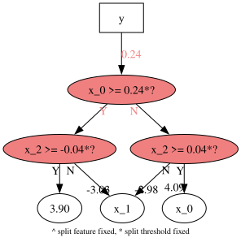
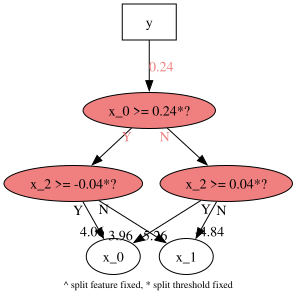
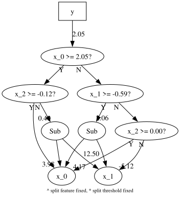

Locking the search during generation updates
This notebook shows how Brush’s locking mechanism works when you want to preserve part of a program while continuing evolution on new data.
The sequence below demonstrates three phases:
Fit an initial model on a base dataset.
Lock the upper part of the tree and continue with
partial_fit(...).Unlock the model and run another
partial_fit(...)to resume unrestricted search.
import numpy as np
import graphviz
from pybrush import BrushRegressor
1. Create a base problem and a shifted follow-up problem
The second dataset changes the coefficient pattern so that the model benefits from reuse, but still needs adaptation.
def mse(y_true, y_pred):
y_true = np.asarray(y_true)
y_pred = np.asarray(y_pred)
return float(np.mean((y_true - y_pred) ** 2))
rng = np.random.default_rng(7)
n_samples = 500
X_base = rng.normal(size=(n_samples, 3))
y_base = np.array([
4.0 * row[0] + 0.5 * row[1] if row[2] > 0 else -3.0 * row[1] + 0.2 * row[0]
for row in X_base
])
# Shifts both in feature and target!
X_shifted = rng.normal(size=(n_samples, 3))
X_shifted[:, 0] = X_shifted[:, 0] * 1.4 + 1.0
X_shifted[:, 1] = X_shifted[:, 1] - 0.5
y_shifted = np.array([
4.0 * row[0] - 0.25 * row[1] if row[2] > 0 else -5.0 * row[1] + 0.4 * row[0]
for row in X_shifted
])
print('base shape:', X_base.shape, y_base.shape)
print('shifted shape:', X_shifted.shape, y_shifted.shape)
print('y base mean: ', np.mean(y_base))
print('y shifted mean:', np.mean(y_shifted))
base shape: (500, 3) (500,)
shifted shape: (500, 3) (500,)
y base mean: -0.07736613840644213
y shifted mean: 3.7191083728546763
2. Fit the initial generation window
This first fit builds a population on the base data. The compact tree structure is the part we will selectively preserve in the next step.
est = BrushRegressor(
functions=['SplitOn', 'SplitBest', 'Mul', 'Add', 'Sub'],
pop_size=500,
max_gens=20,
max_depth=5,
max_size=10,
start_from_decision_trees=True,
constants_simplification=True,
inexact_simplification=True,
verbosity=1,
random_state=7,
)
est.fit(X_base, y_base)
print('stage 1 base mse:', mse(y_base, est.predict(X_base)))
print('stage 1 shifted mse:', mse(y_shifted, est.predict(X_shifted)))
print('stage 1 model:')
print(est.best_estimator_.get_model())
Completed 100% [====================]
stage 1 base mse: 0.9389598521387683
stage 1 shifted mse: 12.693906935930773
stage 1 model:
If(x_0>=0.24,If(x_2>=-0.04,3.90,-3.03*x_1),If(x_2>=0.04,4.09*x_0,-2.98*x_1))
3. Lock the upper part of the tree
Locking the top levels keeps the learned structure fixed while lower nodes and weights can still adapt. This is the key step for controlled transfer between generation windows.
est.best_estimator_.program.lock_nodes(
2,
keep_leaves_unlocked=True,
keep_current_weights=True,
)
print('locked the top two levels of the current best estimator')
print('locked model:')
print(est.best_estimator_.get_model())
print('locked tree:')
print(est.best_estimator_.get_model('tree'))
graphviz.Source(est.best_estimator_.get_model('dot'))
locked the top two levels of the current best estimator
locked model:
If(x_0>=0.24,If(x_2>=-0.04,3.90,-3.03*x_1),If(x_2>=0.04,4.09*x_0,-2.98*x_1))
locked tree:
If(x_0>=0.24)
|- If(x_2>=-0.04)
| |- 3.90
| |- -3.03*x_1
|- If(x_2>=0.04)
| |- 4.09*x_0
| |- -2.98*x_1

4. Continue evolution with the lock in place
partial_fit(...) reuses the current engine and population, then applies the requested lock depth before continuing the search on the new data.
est.partial_fit(
X_shifted,
y_shifted,
lock_nodes_depth=2,
keep_leaves_unlocked=True,
keep_current_weights=True,
)
print('stage 2 base mse:', mse(y_base, est.predict(X_base)))
print('stage 2 shifted mse:', mse(y_shifted, est.predict(X_shifted)))
print('stage 2 model:')
print(est.best_estimator_.get_model())
print('stage 2 tree:')
print(est.best_estimator_.get_model('tree'))
graphviz.Source(est.best_estimator_.get_model('dot'))
Completed 100% [====================]
stage 2 base mse: 2.4325052852682343
stage 2 shifted mse: 0.9083711174803811
stage 2 model:
If(x_0>=0.24,If(x_2>=-0.04,4.06*x_0,-5.26*x_1),If(x_2>=0.04,3.96*x_0,-4.84*x_1))
stage 2 tree:
If(x_0>=0.24)
|- If(x_2>=-0.04)
| |- 4.06*x_0
| |- -5.26*x_1
|- If(x_2>=0.04)
| |- 3.96*x_0
| |- -4.84*x_1

5. Stop locking and resume unrestricted search
Passing end_depth=0 unlocks the tree again. The last call shows that generation updates can resume without preserving the prior lock state.
est.best_estimator_.program.lock_nodes(0, keep_leaves_unlocked=True, keep_current_weights=False)
est.max_gens = 50
est.partial_fit(
X_shifted,
y_shifted,
lock_nodes_depth=0,
keep_leaves_unlocked=True,
keep_current_weights=False,
)
print('stage 3 base mse:', mse(y_base, est.predict(X_base)))
print('stage 3 shifted mse:', mse(y_shifted, est.predict(X_shifted)))
print('stage 3 unlocked model:')
print(est.best_estimator_.get_model())
print('stage 3 unlocked tree:')
print(est.best_estimator_.get_model('tree'))
graphviz.Source(est.best_estimator_.get_model('dot'))
Completed 100% [====================]
stage 3 base mse: 5.744836281693709
stage 3 shifted mse: 3.5116005509724473
stage 3 unlocked model:
If(x_0>=2.05,If(x_2>=-0.12,3.98*x_0,0.40*Sub(x_0,12.50*x_1)),If(x_1>=-0.59,2.06*Sub(x_0,x_1),If(x_2>=0.00,4.17*x_0,-5.12*x_1)))
stage 3 unlocked tree:
If(x_0>=2.05)
|- If(x_2>=-0.12)
| |- 3.98*x_0
| |- 0.40*Sub
| | |- x_0
| | |- 12.50*x_1
|- If(x_1>=-0.59)
| |- 2.06*Sub
| | |- x_0
| | |- x_1
| |- If(x_2>=0.00)
| | |- 4.17*x_0
| | |- -5.12*x_1
